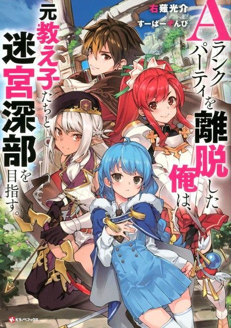

I Left My A-Rank Party to Help My Former Students Reach the Dungeon Depths!
Aランクパーティを離脱した俺は、元教え子たちと迷宮深部を目指す。
Yuke quits his A-rank party after years of abuse and joins his former students, who need his support to clear a dungeon.
We haven't found where the anime ends in the light novel yet.
6.5AniList score
—Animeter, no votes yet
24episodes
Rate it or report where you stopped
Is it worth pushing through?
Built from what visitors report across all 24 episodes.
Loading reports…Checking what other people said about this one.
Sign in above with your email to add your report.
More like I Left My A-Rank Party to Help My Former Students Reach the Dungeon Depths!
 Manga Vol. 26.3
Manga Vol. 26.3
 Unclear6.8
Unclear6.8
 Manga Vol. 66.0
Manga Vol. 66.0
 Manga Vol. 197.3
Manga Vol. 197.3
 Manga Ch. 538.5
Manga Ch. 538.5
 Manga Ch. 316.7
Manga Ch. 316.7
 Manga Vol. 57.3
Manga Vol. 57.3
 Manga Ch. 1118.0
Manga Ch. 1118.0
 Unclear7.0
Unclear7.0
 Manga Ch. 1997.8
Manga Ch. 1997.8
 Manga Ch. 2707.9
Manga Ch. 2707.9
 Unclear6.6
Unclear6.6